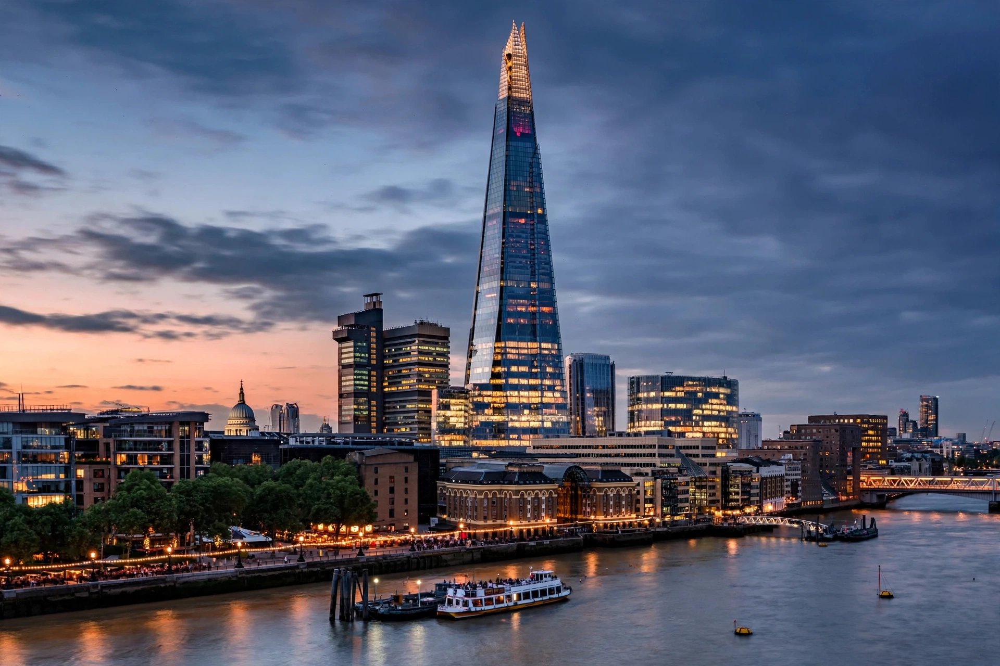

Renzo Piano

Renzo Piano (born 14 September 1937) is an Italian architect. His notable buildings include the Centre Pompidou in Paris (with Richard Rogers, 1977), The Shard in London (2012), Kansai International Airport in Japan (1994), and the Whitney Museum of American Art in New York (2015). He won the Pritzker Architecture Prize in 1998, and in 2013 he was appointed a senator for life in the Italian Senate by President Giorgio Napolitano.
Career
Piano was born into a family of builders in Genoa and studied at the Politecnico di Milano. His partnership with Richard Rogers produced the Centre Pompidou, whose exposed, colour-coded services made "high-tech" architecture famous. Through his Renzo Piano Building Workshop (founded 1981, with offices in Genoa and Paris), he developed a practice noted for craftsmanship, lightweight construction, museums — including the Menil Collection in Houston, the Beyeler Foundation near Basel, and the expansion of the Art Institute of Chicago — and large infrastructural works such as the Kansai airport island terminal.
Style
Piano's work combines technological innovation with attention to light, landscape and civic context; later projects include the Stavros Niarchos Foundation Cultural Center in Athens, the Academy Museum of Motion Pictures in Los Angeles, and the replacement Genoa bridge, the San Giorgio Bridge, opened in 2020 after the Morandi Bridge collapse.
See also: Pritzker Prize